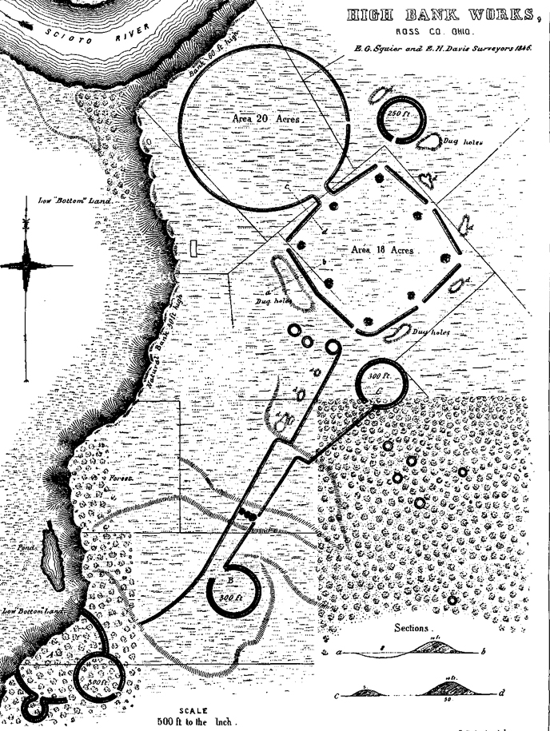
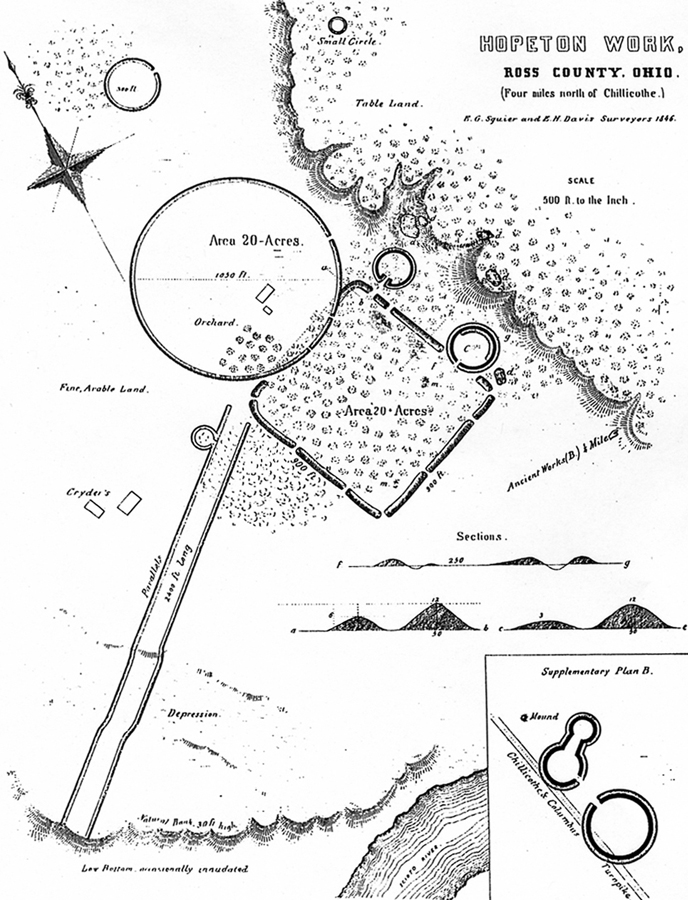
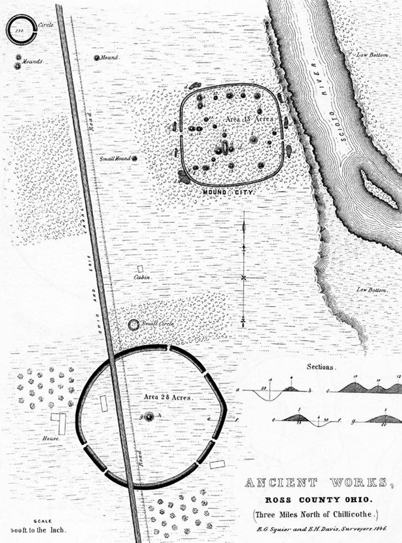
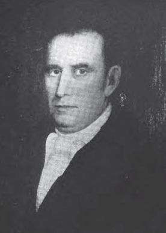
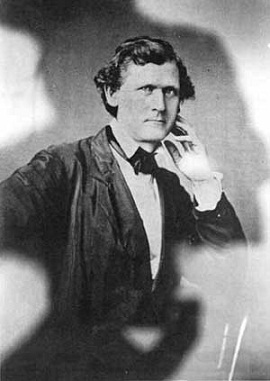
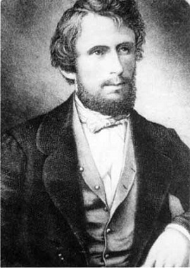
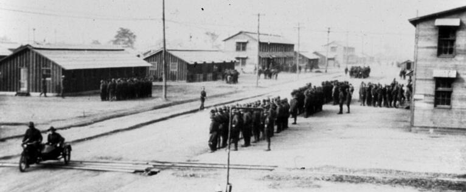

Hopewell Culture History.
Learn about Hopewell history.
Bacon ipsum dolor amet pancetta drumstick cupim tongue sirloin prosciutto beef fatback. Ham swine corned beef meatloaf jerky hamburger flank. Picanha beef ribs landjaeger pig turducken tenderloin doner ground round kevin bacon porchetta short ribs prosciutto ball tip pork.
Hisortical Places
High Bank Works
High Bank Works consists of multiple earthen features spread over 197 acres on a terrace above the Scioto River. A circle and octagon, each measuring approximately 1,000 feet in diameter, are major features of this site. On the interior of the octagon were eight small mounds that correspond to the eight intersecting points of the outer walls. Six of the intersecting points form gateways, and one to the north forms an entrance into the large circle. The large circle has one gateway to the east and is opposite a smaller circular enclosure 250 feet in diameter.
Beyond the southern most point of the octagon were two small circles, each 300 feet in diameter, with single gateways. They were connected to the larger forms by two nearly parallel embankments extending southwest for almost 2,000 feet. Three small conjoined enclosures were located at the far end of the parallel embankments.

Hopeton Earthworks
This earthwork is located about one mile east of Mound City Group on a terrace east of the Scioto River. The 292-acre site consists of a square enclosure about 900 feet on a side that is joined to a circle with a diameter of about 1,050 feet. Smaller circular structures also join the square at various points, and linear parallel earthworks extend westward toward the river for about 2,100 feet from the northwest corner of the square.
A description from 1848 indicates that the circle and square walls were 50 feet wide at the base. At that time the walls enclosing the square were 12 feet high. Continued cultivation since then has reduced the earthworks to less than 5 feet in height in most places, and the small circles and parallel walls are no longer visible.

Mound City Group
This earthwork consist of a 13-acre rectangular earth enclosure with at least 23 mounds. The height of the earth walls of the enclosure is about 3 to 4 feet, with an entrance or gateway on both the east and west sides. All the mounds are dome shaped except for one that is elliptical. The largest mound of the group was described by early explorers as 17.5 feet high and 90 feet in diameter. There are two additional mounds just outside the enclosure. All the walls and mounds have been reconstructed and are clearly visible.
During World War I the Mound City Group site was occupied by a military training center known as Camp Sherman. In the early 1920s after Camp Sherman was razed, the Ohio Historical Society excavated the site and began reconstruction of the Hopewell earthworks and mounds.

Hisortical Figures
Caleb Atwater (1778 - 1867)
Atwater was one of the first Anthropoligists to document ancient earthworks throughout the Ohio Valley. His professional career included that as a teacher, a minister, a State Representative, a Postmaster and a lawyer. Upon moving to Circleville from New York in 1815, Atwater continued practicing law, but he began to spend time studying the earthworks of the Hopewell and Adena. In 1820, Atwater authored "Description of the Antiquities Discovered in the State of Ohio and Other Western States." This groundbreaking publication described earthworks throughout the Ohio Valley and contained some of the earliest descriptions and illustrations of Hopewell Mound Group, Seip Earthworks and Spruce Hill Works. View a copy of Atwater's original plate illustration that included Seip Earthworks and Spruce Hill.

Edwin Hamilton Davis (1811 - 1888)
Born in Ross county, Ohio, Dr. Edwin Davis was a well-known and respected medical doctor in addition to being a pioneer in the field of Archaeology. Davis practiced medicine in Chillicothe and in 1850, he took a teaching job at New York Medical College, where he taught for 10 years. He also was an editor for the American Medical Monthly. Early in his Archaeology career, he assisted Charles Whittlesey in exploring ancient mounds in 1836. From 1845 through 1847, Davis partnered with Ephraim G. Squier and the two undertook one of the most monumental Archarological endeavors ever attempted. Together, they surveyed nearly one hundred earthworks and hundreds of mounds. Many of these excavations were performed at his own expense. The works of Dr. Davis and Squier was published in 1848 as "Ancient Monuments of the Mississippi Valley" which formed the first published volume of the Smithsonian contributions to knowledge series. Throughout the years of opening and exploring the ancient mounds, Davis ammassed a vast collection of relics recovered from these mounds. After a bitter end to their professional relationship, Davis parted ways with Squier and left Chillicothe in 1850 with artifacts in tow. Unable to find an American buyer to purchase his collection, Davis sold his artifacts to William Blackmore for ten thousand dollars. Blackmore then established the Blackmore Museum in England which displayed the collection. The Blackmore Museum eventually became part of the British Museum. The Squier & Davis Collection can still be seen today at the British Museum. Edwin Davis passed away at his New York residence on May 15, 1888. Read the Davis obituary as published in the New York Times.

Ephraim George Squier (1821 - 1888)
Ephraim G. Squier was born in Bethlehem, New York. The son of a minister, he grew up studying engineering, but ultimately decided upon a career in literature and journalism. Eventually, his professional career brought him to Chillicothe, Ohio in 1845 where he became editor for the weekly Scioto Gazette. It was during this time in Chillicothe that Squier met Dr. Edwin Davis. The two became professionally involved in the newly formed field of Archaeology as they both shared a common interest in the antiquities that dotted the Ohio valley. Both men felt a sense of urgency in documenting the earthworks and mounds as they were falling victim to the plow blade at an ever-increasing pace. From 1845 through 1847, Squier partnered with Davis and the two undertook one of the most monumental Archarological endeavors ever attempted. Together, they surveyed nearly one hundred earthworks and hundreds of mounds. The works of Squier and Davis was published in 1848 as "Ancient Monuments of the Mississippi Valley" which formed the first published volume of the Smithsonian contributions to knowledge series. After a bitter end to their professional relationship, Davis left for New York city and Squier went on to serve as a diplomat for the United States government. In 1849, he was appointed diplomat for all Central American states and negotiated treaties with several countries. He went on to publish several works on Central American culture. In 1862, President Lincoln appointed him as U.S. Commissioner to Peru. Squier began to prepare a literary work on the Inca works in Peru, and portions were published in Harper's Magazine. Unfortunately, he was unable to complete this work due to a mental health illness that plagued him for the remainder of his life. In 1874, he was declared insane. Ephraim Squier passed away at the residence of his brother in Brooklyn, New York on April 17, 1888. Read the Squier Obituary as published in the New York Times.

Camp Sherman

1812 to 1917
The lands in and around the Mound City Group have been the host to multiple military encampments in addition to being fertile farm land. During the war of 1812, land near Mound City would be used for prisoners of war captured during fighting that went on across the river from Detroit, Michigan. For the most part, the grounds of Mound City were largely ignored as farmers thought the mounds were a nuisance as they cleared and plowed the adjacent lands methodically and efficiently year after year. In the 1840's, two surveyors by the names of Edwin Davis and Ephraim Squier (Click a name to learn more about these two influential figures in Hopewell history) began an epic partnership that would document hundreds of Hopewellian earthwork sites in detail, including Mound City. Together, these men would conduct surveys and limited excavations throughout the region and at Mound City in an effort to learn about the mysterious people of the Hopewell Culture. When the Civil War broke out in 1861, local militia utilized the land for drilling and training and referred to it as Camp Logan. After Davis and Squier and Camp Logan, the lands of Mound City and those surrounding it would revert back to farming until the early part of the 20th century.
Declaration of War
April 6, 1917. A date that bears significance for the city of Chillicothe, as well as the nation. Congress formally declared war on Germany and thrust the United States into the first World War. As a result, rapid mobilization was required to get ordinary men trained into battle-ready soldiers as war was already raging in Europe, and had been since 1914. Since Chillicothe had already been host to previous military facilities such as Camp Logan during the Civil War and Camp Bull during the War of 1812, it was an obvious choice to host another such facility. This time though, the area would be host to an establishment that would swell the local population from 16,000 to 60,000 in just a matter of a few months. While farmers initially resisted the War Department's efforts to build an Army Cantonment, local businessmen saw the promise of increased revenue and contributed to the government's offer which raised it to $20 per acre. Not all were persuaded by this tempting price, but eminent domain was exercised and landowners relinquished, albeit begrudgingly. In June of 1917 the War Department officially announced that Chillicothe would become home to one of the new Army cantonments. It would become known as Camp Sherman, named after the famed Union Army Civil War General, William Tecumseh Sherman.
Construction Begins
Since war was already underway in Europe, time was of the essence to get Camp Sherman built as quickly as possible. Two thousand buildings would be erected between June of 1917 and September of 1917 on nearly two thousand acres of land that the War Department had purchased. Included in that tract was the isolated parcel of land containing the Mound City Group. Construction crews of up to five thousand men would race to build these buildings which included two-story wooden barracks that would be situated throughout the area, including on top of the Mound City Group. So efficient were these crews that they would often complete a building in twenty minutes. Had it not been for the insightful intervention of the Ohio Historical Society's Henry Shetrone, William Mills and a local Chillcothean amatuer Archeologist named Albert C. Spetnagel, the mounds of Mound City Group may have become victim to the reckless efficiency of the construction crews. Shetrone and his friends convinced the Army to construct their barracks in a way that would not cause irreperrable harm to the mounds and the site. After meeting with Army officials, an agreement was struck that would have buildings constructed on platforms above the mounds and one barrack would be turned perpendicular to other barracks so as to not completely destroy mound #7. Even though the Army agreed to do as little harm to the area as they could, some smaller mounds were severely damaged or destroyed by pipelines, roads and/or railroad lines. After three months of construction in the two thousand acres of newly acquired federal land, the first draftees would arrive to begin their transformation from civilian to soldier.
Doughboys in Chillicothe
On September 5th, 1917, the first draftees arrived at Camp Sherman to begin their makeover from civilian to "Doughboys." U.S. soldiers during WW1 were often referred to as "Doughboys." The exact origins of the name are unclear, but it is believed to have originated as early as the U.S.'s involvement in the Mexican-American war in the mid-1800's. Soldiers may have picked up the name based on a type of baked doughy flour/rice concoction that they prepared and consumed. Another theory opines that it derives from the look soldiers had after marching through the Mexican desert in which dust would cling to their uniforms and give them an appearance similar to that of adobe buildings. Initially, the term was used in a disparaging way to describe soldiers of the infantry. However, upon U.S. entry into WWI, it became a term of endearment that reflected favorably on all U.S. soldiers.
Recreation
While most days consisted of countless hours of drilling and training in preparation for war, Camp Sherman soldiers also were afforded a small number of hours where they could recreate on base or head into Chillicothe to enjoy activities and company from the citizens of the town. Soldiers would also fill their hours by playing sports and games, reading books and writing letters home. Soldiers could gather at the many YMCAs, YWCAs, community houses, camp exchanges, theaters, and churches built at Camp Sherman. There they could play games, watch a show, listen to the victorola, or just lounge around. One physical activity that was highly encouraged was playing football. Many of the men would participate in playing the game and on one occasion, an official Camp Sherman football team was organized to play the Buckeyes of The Ohio State University. On Thanksgiving day, November 29th, 1917, The Camp Sherman Stars played the Buckeyes. Many members of the Camp Sherman squad were collegiate players at notable Universities, such as Indiana, Brown, Notre Dame and Yale to name a few. One notable Buckeyes who took to the gridiron that day was the legendary All-American, "Chic" Harley. In 1918, Harley would join the U.S. Army Air Corp and serve through the war until his discharge in July 1919. Even though the Camp Sherman Stars boasted talent from the collegiate ranks, they were no match for the Buckeyes as they were defeated by a score of 28 – 0. Click on the photo above to view a pdf copy of the official program for the game between the Buckeyes and the Camp Sherman Stars.
Doughboys in Chillicothe
On September 5th, 1917, the first draftees arrived at Camp Sherman to begin their makeover from civilian to "Doughboys." U.S. soldiers during WW1 were often referred to as "Doughboys." The exact origins of the name are unclear, but it is believed to have originated as early as the U.S.'s involvement in the Mexican-American war in the mid-1800's. Soldiers may have picked up the name based on a type of baked doughy flour/rice concoction that they prepared and consumed. Another theory opines that it derives from the look soldiers had after marching through the Mexican desert in which dust would cling to their uniforms and give them an appearance similar to that of adobe buildings. Initially, the term was used in a disparaging way to describe soldiers of the infantry. However, upon U.S. entry into WWI, it became a term of endearment that reflected favorably on all U.S. soldiers.
The Spanish Influenza Pandemic
While the allies battled an enemy in the fields and trenches of Europe in 1918, the entire world would have to engage and fight a seemingly invisible enemy that wasn't isolated to war combatants on the field of battle. The Spanish Influenza Pandemic of 1918 would tally a greater mortality rate than that of all who were felled during combat in WWI. No one is quite sure where exactly the Influenza originated, but once it began to spread there was no hiding from this silent and deadly disease. Over 20 million people, almost 5% of the world population, died as this disease spread with ruthless efficiency. 43,000 U.S. servicemen, about half of those who died in Europe during the war, were felled by the influenza and not by a mortal enemy. In the U.S. alone, 28% of the population would become infected and nearly 675,000 would die as a result of the disease. Conditions around the globe would mimic that of the Black Death Bubonic Plague in the 14th century. However, this strain of influenza would kill more people in one year than what the Bubonic Plague did in four total years. In Chillicothe and at Camp Sherman, the disease spread just as quickly as it did everywhere else. Thousands of residents and soldiers were infected in a very short time. Approximately 5,686 cases of influenza were documented among Camp Sherman soldiers in 1918. 1,777 of them were unable to ward off the disease and died. Statewide in Ohio, hundreds of thousands of people became infected and tens of thousands died. During one week alone in the fall of 1918, 1,541 people were confirmed to have died throughout the state. With the high mortality rate at Camp Sherman, The Majestic Theater on 2nd Street in Chillicothe became a temporary morgue. Bodies would be "stacked like cordwood" at the theater while it was operated as a morgue. Body fluids that were drained during the embalming process ran off into the alley next to the theater giving it the dubious nickname of "Blood Alley." Once victims' bodies completed the embalming process, they would be transported by wagon back to the camp so they could be sent back to their hometowns by railway. As these wagons made their way through Chillicothe, funeral hymns were played to reflect the somber mood. As with all public places in the U.S., meeting places, bars and theaters were closed to try to prevent further spread of the disease. All personnel at Camp Sherman were quarantined from Chillicothe as well. By summer of 1919, the pandemic would come to an end as the influenza ran its course and the world's population built up an immunity towards it. This was a pandemic that the world had never seen the likes before and hasn't seen the likes since. While other strains of influenza have popped up through the years since 1919, the Spanish Influenza Pandemic of 1918 remains the most devastating and deadliest disease that the world has ever seen.
At the 11th hour...
By 1918, war had been raging in Europe for four years. Thankfully, the end of 1918 would also mark the end of the war. In a railway car in the middle of the Compiègne forest. At the 11th hour of the 11th day of the 11th month in 1918, Allied representatives met with German representatives and signed the Armistice that would end the war and mark the defeat of the German Army. The U.S. would suffer nearly 100,000 killed servicemen while the Allies racked up a colossal death toll of nearly 6 million servicemen killed. All told, the war accounted for a staggering estimated total of nearly 20 million killed. The end of the war meant the imminent end of military cantonments in the U.S., including Camp Sherman. The Army wasted little time in deactivating soldiers upon war's end. Five days after the Armistice, it was announced that 12,000 men would be discharged from Camp Sherman. Saturday, November 30th was proclaimed Chillicothe Day and residents and soldiers celebrated the end of the war and honored service members for their service during the Great War. By December 4th, men were leaving Camp Sherman at the rate of 1,500 per day. With the exception of the injured and sick who remained at the hospital, all discharges were complete by July 16th, 1920. Even though the soldiers of Camp Sherman were gone by the end of 1920, the buildings remained. The War Department began dismantling buildings and selling the wood as surplus. Many homes in Chillicothe were built from this surplus wood and still stand today. Some of the land remained federally-owned with a portion being the grounds of the Chillicothe Veteran's Hospital Group and a small portion appropriated as Mound City Group National Monument (now Hopewell Culture National Historical Park). The only building remaining from the nearly 2,000 that comprised Camp Sherman is the Library. Visitors to Hopewell Culture can clearly see the building as it is marked "RCI FARM" on the side, located just off of State Route 104 and Moundsville Road. The physical remnants of Camp Sherman are all but gone, but the legacy and contribution from Camp Sherman remain and live on.